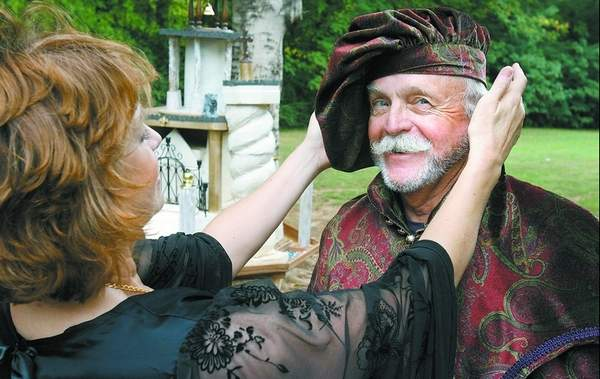

|
Limited number of tickets available for royal meal 
Donna Miles adjusts a hat for Rick McAdams There's
no other evening like it in the Shoals.
The annual Alabama Renaissance Faire feast, Saturday, Oct. 20, in the Florence-Lauderdale Coliseum, offers diners a true-to-life medieval Italian feast. Open to anyone with a ticket, the feast features authentic food, costumes and entertainment. It's part of a month of activities leading up to the Alabama Renaissance Faire, Oct. 27-28, in Wilson Park in Florence. "The whole idea of the feast is to have fun while at the same time stepping back to the Middle Ages and Italian Renaissance," said Lee Freeman, of Florence, a member of the Renaissance Roundtable group that plans the feast and the fair. "Where else can people sample delicious yet authentic medieval cuisine? Anyone that's expecting what you'd get at a Medieval Times restaurant (a chain of medieval-style eateries) is in for a pleasant surprise. Real medieval cuisine is much better!" Jim Matterer, of Gode Cookery medieval catering in Newark, Del., created the menu and will prepare the food for the feast as he's done for the past several years. This year's theme is a royal autumn Italian feast with a strong Middle Eastern influence. "As a longtime member of the medieval reenactment group the Society for Creative Anachronism, Jim researches, and in some cases actually translates, recipes from authentic medieval and Renaissance cookbooks for our feasts," Freeman said. Diners at the feast are seated at tables and servers bring the food. Feast organizers encourage guests to bring their own eating utensils and table decorations. "The Roundtable provides your standard paper plates, paper napkins and plastic silverware, but if you want something more authentic and fun, you should bring your own," Freeman said. In fact, many feast-goers decorate their table spaces in elegant Renaissance detail, but that's not necessary, he added. "Historically speaking, 'less is better,' as medieval table settings were spare and utilitarian, but a little showing-off is fun, too, and many guests like to go all out," Freeman said. "If you're looking for cheap, historical-looking table ware and accessories, visit flea markets, yard sales and thrift stores. You'll be amazed at what you can find there!" The coliseum will be open Friday and Saturday, Oct. 19 and 20, for decorating before the feast, he added. In addition to the food, the evening features period entertainment. "We have been quite busy this year," said Roundtable member Donna Miles, of Florence, in charge of entertainment for the feast. "Planning something new each year is a challenge. There are classic things which everyone wants, but there needs to be something fresh, as well." This year's schedule calls for dancing by the feast-goers, belly dancing by the local group the Rainbow Dancers, a professional singer, sword fighters, American tribal belly dancing by Lumani of Huntsville, William of the Hood and an audience interactive skit. Another part of the "entertainment" for those attending the feast is the costuming: In keeping with the spirit of the evening, many guests are in full Renaissance dress. "If you enjoy elegant costumes, the feast is where you need to be," Miles said. "People really pull out all the stops. Gold and glitter, regal doublets, shiny swords and beaming children. It truly feels like we're at court." But you don't have to wear Renaissance outfits to attend. "Costumes are admired but not required," Freeman said, "although it's more fun to dress up." Need help creating a Renaissance outfit? The Roundtable sponsors a costume-making workshop from 9 a.m. until 2 p.m. Saturday at the Kennedy-Douglass Center for the Arts, 217 E. Tuscaloosa St., Florence. "We use a single tunic pattern that's a unisex style," Miles said. "Each person can decorate it up or leave it plain. Each tunic requires your length twice, all one piece. "The fabric should be at least 54-inches wide, although 60-inches is better." Wilson's Fabrics and Hancock Fabrics, both in Florence, have patterns and fabrics for Renaissance costumes, Miles added. Also at the feast, next year's monarch for the Renaissance Faire will be chosen. It's a matter of luck: Anyone who'd like a chance to be the monarch gets to partake of a special dessert that has a coin hidden inside. The person who receives the piece of dessert with the hidden coin is the new monarch. The reigning monarch, chosen at the 2006 feast, is Holly Taylor, of Collinwood, Tenn. RENAISSANCE FEAST MENU First course - bread and butter, chickpea broth flavored with herbs and spices and a salad of spring mix with vinegar and oil. Second course - Cornish game hen stuffed with chicken breast, ham, and herbs; squash cooked in broth thickened with egg yolks and cheese; macaroni garnished with cheese, butter and spices; and peas fried with bacon, lemon juice, sugar and cinnamon. Third course - beef in a sauce of wine and herbs served kebab-style, rice cooked in meat broth with pepper & cheese and broad beans fried with apples and figs. Fourth course - Zabaglione, which is sweet thickened cream and ginger wafers. Beverages are sweet tea and lemonade. No alcohol is allowed. What: Renaissance feast When: 7 p.m. Saturday, Oct. 20 Where: Florence-Lauderdale Coliseum Cost: Tickets $20 each, sold in advance only at Kennedy-Douglass Center for the Arts, 217 E. Tuscaloosa St., Florence. Tickets limited to 200. Details: alarenfaire.org This page ©
2007 Gode
Cookery
http://www.godecookery.com
|

BACK TO: Alabama Renaissance Faire
A Boke of Gode Cookery Alabama
Renaissance Faire
Alabama
Renaissance Faire
© James L. Matterer
Please visit The Gode Cookery Bookshop